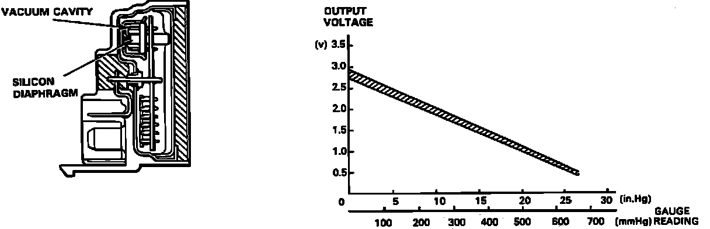

Barometric Pressure Sensor: Description and Operation
Atmospheric Pressure (PA) Sensor Operation:

The atmospheric pressure (PA) sensor is mounted behind the fuse box in the passenger compartment. The sensor consists of a silicon diaphragm and some support circuitry. The ECU supplies a 5 volt signal and a ground to the sensor from terminals C13 and C14 respectively. The diaphragm covers a sealed cavity. Changes in the pressure differential between the sealed cavity and the atmosphere cause the silicon to flex. The flexing of the silicon generates a small voltage which is amplified by the support circuitry and used to modify the fixed 5 volt signal supplied by the ECU. The modified signal is then returned to ECU pin C9. The ECU uses the PA sensor signal to sense changes in altitude so that ignition timing and fuel delivery can be adjusted to maintain consistent engine performance.